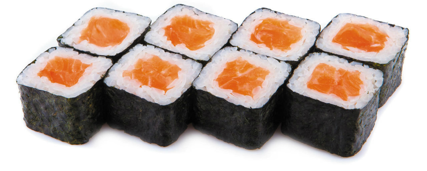
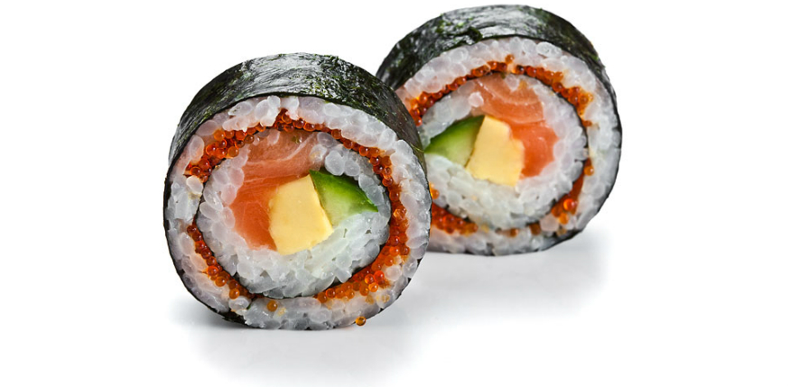
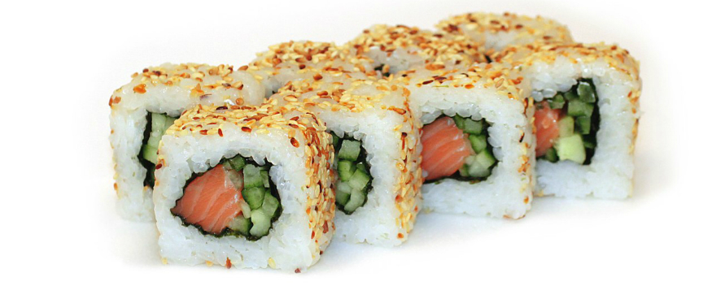
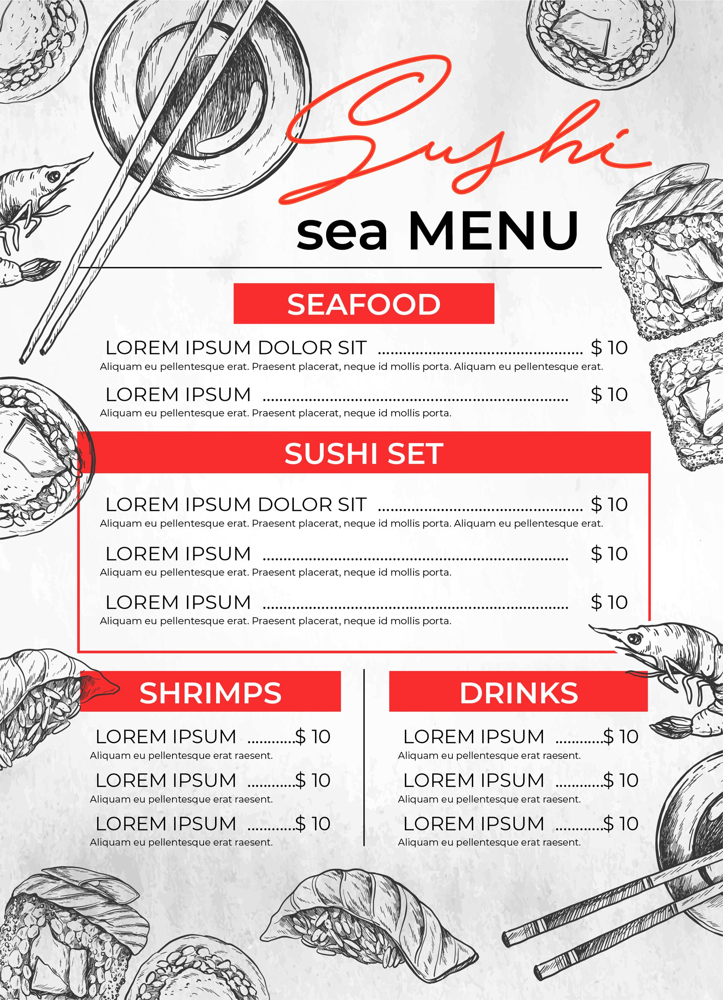

Ресторан "NAVI SUSHI BAR"
Ресторан "NAVI SUSHI BAR" в Совиньоне расположился в центральной части жилого массива Совиньон на пересечении Люстдорфского проспекта, улицы Набережной и Южной по адресу ул. Южная, 2. Большой светлый кондиционированный зал с открытой кухней и уютной атмосферой располагает для отдыха и комфортного время провождения в компании друзей и близких. Летняя площадка порадует всех любителей по трапезничать на открытом воздухе вдали от шума и городской суеты. Гарантируем, что Вы получите максимум удовольствия и наслаждения японской и азиатской кухни, вдыхая при этом чистый и ароматный морской воздух.

История суши и роллов
История любви рыбы и кисловатого липкого риса началась примерно в 17 веке, когда из южной Азии в Японию пришла традиция ферментировать пресноводную рыбу. По другим источникам, до этого додумались сами японцы еще в 6 веке. Ферментация – процесс брожения, благодаря которому продукты проходят своеобразную консервацию, приобретая новый вкус и полезные свойства. Кусочки очищенной соленой рыбы перекладывали вареным рисом, оставляли под гнетом в деревянных бочках, а спустя несколько месяцев рыбу можно было без опаски есть и хранить еще около полугода. Кусочки ели с соевым соусом, чтобы перебить сильный запах. «Отработанный» рис сначала выбрасывали, но со временем начали пытаться добавлять в пищу. После изобретения рисового уксуса им стали специально поливать вареный рис для уже полюбившегося необычного вкуса, а ферментированную рыбу заменили свежей.
По официальной версии, история суши в их привычном виде началась в 19 веке, а первым смельчаком, положившим на комочек риса кусочек сырой океанической рыбы, был повар Ехэй (Джохей) Ханай. Примерно в одно время возникли два стиля оформления суши. Более простой получил название Идо, взяв имя Токио того времени. Сложные мозаичные суши в красивой съедобной оболочке, придуманные в городе Осака, получили название района Кансаи.
Свой окончательный вид и размеры порции риса, умешающиеся в ладони – нагири (горсточка) получили в тяжелое для Японии время – после Второй мировой войны, когда суши-повара из стакана сырого риса обязаны были слепить 10 нагири и один ролл.
Ролл – разновидность суши, порезанный на порции рулет из риса и начинки в прессованных водорослях нори. Очень часто, говоря «суши», мы представляем именное его. Ролл имеет несколько известных вариантов размера и количества начинки.
Хосомаки – небольшой ролл с одним видом начинки: лососем, угрем, тунцом.
Футомаки – большой ролл с несколькими видами начинки, обычно это сочетание рыбы или морепродуктов с овощами
История роллов также имеет несколько этапов. Есть мнение, что первый ролл, с нори поверх риса, придумали в одной из суши-забегаловок Токио в конце 19 века, специально для спешащих посетителей.
Другой вариант, урамаки, в котором водоросли с начинкой, наоборот, спрятаны под рисовой «шубкой», появился в США в 70-х годах прошлого века. В период сумасшедшей моды на японскую кухню их придумал повар-сушист, американец японского происхождения Ичиро Машита. Именно поэтому многие виды ролл носят названия американских городов, где история возникновения суши получила новый виток развития. Урамаки принято посыпать обжаренным кунжутом, икрой летучей рыбы.
В 1977 году японец Минору Икисима создал суши-робота. С одной стороны, популярность такой техники нанесла удар по суши-поварам, с другой – уменьшила проблемы с гигиеной приготовления блюда и поставила производство суши на конвейер по всему миру.
К распространению суши-ресторанов за границей сами японцы относятся неоднозначно. С одной стороны, популяризация японской кухни помогла тысячам японцев-иммигрантов реализовать себя в кулинарии. С другой – нарушения аутентичности японских блюд даже привели к большому скандалу, случившемуся в 2006 году с участием министра сельского хозяйства Японии. За ним последовали многочисленные как официальные, так и анонимные проверки известных японских ресторанов в крупных городах Европы и всего мира. Те, кому удавалось «держать марку», получали своеобразный знак качества в виде деревца цветущей вишни.
Меню

Блог
Как есть суши и не толстеть?
- Перед едой (за 10-20 минут) выпить 2 стакана воды с лимоном.
- Кушать суши только до 12:00 с минимальным количеством соевого соуса.
- После окончания приема пищи нельзя пить минимум 1 час.
- С водой (если нет противопоказаний) выпить 2 таблетки с экстрактом сенны.
- В этот день не употреблять сладости, сладкие напитки, алкоголь.
- Следующий прием пищи возможен не ранее, чем через 4 часа следующими вариантами:
- Сырой огурец без соли с лимонным соком
- Листья салата
- Рукола с авокадо
- Отварной броколи
- Выпить за день не менее 2 литров жидкости
- В этот день необходимо пройти пешком минимум 6 км